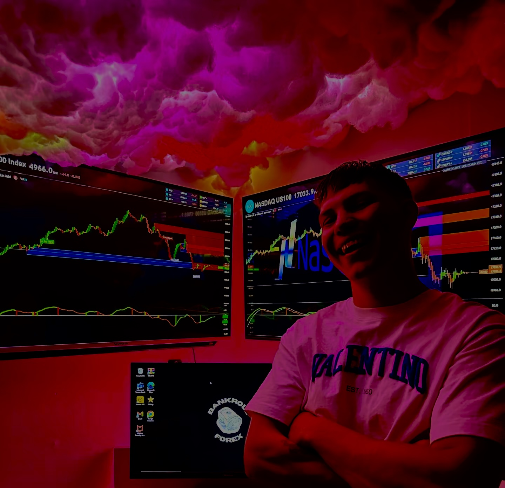

I’m a 26-year-old South African trader with nearly seven years of day trading experience, consistently profitable since 2022. Through years of live market exposure, I had a breakthrough that most traders never fully realise - and it explains why such a large percentage of traders fail.
It happens to the best of us. We’re human. We’re wired for emotion.
Emotion is one of the biggest obstacles in trading. It influences entries, exits, risk-taking and decision-making; especially after a significant loss. I experienced this myself. Even with experience and discipline, there were still difficult days.
So I began researching behavioural patterns, execution structure, and systematic frameworks. The result was a rule-based execution system designed specifically to remove emotional interference from the trading process.
Risk management was another major problem I identified. Most traders are not properly taught how to calculate exposure, position sizing, or risk-to-reward ratios. It can take time to calculate before every trade - time that should be spent analysing structure and refining entries.
That’s why this system integrates risk management directly into execution. It operates according to your predefined risk settings, automatically applying structured lot sizing, stop-loss and take-profit levels. It doesn’t just calculate risk, it enforces discipline.
Another pattern I observed was that many traders are simply too busy. Trading becomes a side pursuit alongside careers, businesses and family responsibilities. I saw this clearly when I began providing signals to help traders who didn’t have time to analyse markets themselves.
But even then, traders would miss signals, enter late, use incorrect lot sizes, forget stop-loss levels or miscalculate exposure. That’s when I realised the next step:
What if the signals could execute automatically; structured, disciplined, and aligned with each trader’s personal risk parameters?
That question led to the development of this system.
This isn’t about replacing traders. It’s about enhancing execution. It’s about structure over impulse, discipline over emotion, and consistency over reaction.
Markets don’t wait. Execution shouldn’t depend on mood, availability, or distraction.